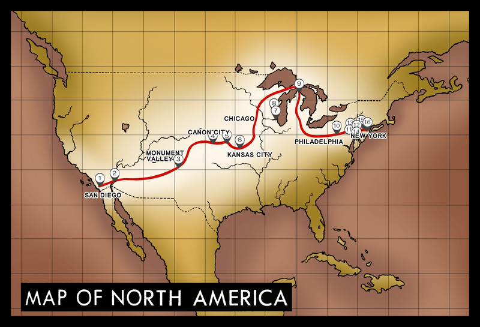

What is Steel Ball Run?
Steel Ball Run is the seventh part of Hirohiko Araki's long-running manga series JoJo's Bizarre Adventure. Originally serialized in Weekly Shonen Jump and later Ultra Jump between 2004 and 2011, it is widely considered one of the greatest manga arcs ever written. Set in an alternate version of 1890s America, the story follows a cross-continental horse race from San Diego to New York City — with a far darker prize hidden beneath its surface.
Unlike previous JoJo parts, Steel Ball Run takes place in a completely alternate universe, reimagining familiar characters in a Wild West setting. Its themes of fate, free will, religion, and the meaning of "the greatest high" elevate it beyond a typical battle manga into something approaching literary fiction.

Main Characters
Johnny Joestar
Once a celebrated jockey from Kentucky, Johnny Joestar lost everything after a moment of arrogance cost him the use of his legs. Paraplegic and directionless, he encounters Gyro Zeppeli at the starting line of the Steel Ball Run race in San Diego. Johnny becomes the point-of-view protagonist of Part 7, and his arc is one of redemption, grief, and the pursuit of meaning. His Stand, Tusk, evolves across four acts and channels the Golden Spin into reality-bending power.
Gyro Zeppeli
A master of the Spin technique — a centuries-old art of generating infinite rotational energy through steel balls — Gyro is a royal executioner from the Kingdom of Naples who enters the race to win a pardon for a young boy condemned to death. Charismatic, mysterious, and ferociously skilled, Gyro serves as Johnny's mentor and best friend. His Stand, Ball Breaker, weaponizes the Golden Spin to devastate enemies on a metaphysical level.
Funny Valentine
The 23rd President of the United States and the story's primary antagonist, Funny Valentine is a deeply patriotic man who will commit any atrocity in service of his nation. His Stand, Dirty Deeds Done Dirt Cheap (D4C), allows him to travel between parallel dimensions and summon alternate versions of himself — making him nearly unkillable. He is one of the most compelling villains in the entire JoJo series.
The Race & Its Stages
The Steel Ball Run race is organized by Funny Valentine and funded by the U.S. government. It is framed as a celebration of American expansion, but its true purpose is to gather the scattered pieces of a holy relic: the Corpse Parts of a saint whose body is said to grant supernatural powers to whoever possesses it.
Race Stages
- 1st Stage — San Diego to Arizona (575 miles)
- 2nd Stage — Arizona to Kansas City (1,380 miles)
- 3rd Stage — Kansas City to Chicago (510 miles)
- 4th Stage — The Midwest to Philadelphia
- Final Leg — Philadelphia to Manhattan, New York City
Key Stands & Abilities
Stands are psychic manifestations of a user's fighting spirit, unique to the JoJo universe. Part 7 introduces several iconic Stands:
- Tusk (Johnny) — Shoots spinning nail bullets that bore through space and reality. At ACT4, creates an infinite rotation capable of trapping enemies in dimensional holes.
- Scary Monsters (Diego Brando) — Allows Diego to transform himself and others into dinosaurs, granting enhanced physical abilities and a predatory intellect.
- Dirty Deeds Done Dirt Cheap / D4C (Valentine) — Dimensional travel and substitution. Perhaps the most strategically overpowered Stand in the series.
- Ball Breaker (Gyro) — Concentrates the Golden Spin to age targets rapidly and pierce through dimensional defenses.
- THE WORLD (Diego Brando, alt.) — Stops time. An homage to DIO's iconic Stand, wielded by the alternate-universe Diego in the finale.
Why Steel Ball Run is So Beloved
Steel Ball Run consistently tops fan polls as the best part of JoJo's Bizarre Adventure, and for good reason. Araki weaves together breathtaking action, complex philosophy, and genuine emotional stakes in a way that few battle manga achieve. The story asks what it means to pursue a dream, what a nation's identity costs, and whether a person defined by tragedy can forge a new destiny.
The relationship between Johnny and Gyro — built on rivalry, mentorship, and deep mutual respect — is one of the most moving friendships in manga history. And the finale, set against the backdrop of Manhattan and a rain-soaked back alley in Naples, is heartbreaking in the best possible way.
For anyone new to JoJo, Part 7 is an excellent entry point. It requires no prior knowledge of the series, stands on its own as a complete story, and showcases Araki's artistry at its absolute peak.
Read more on the JoJo Wiki →